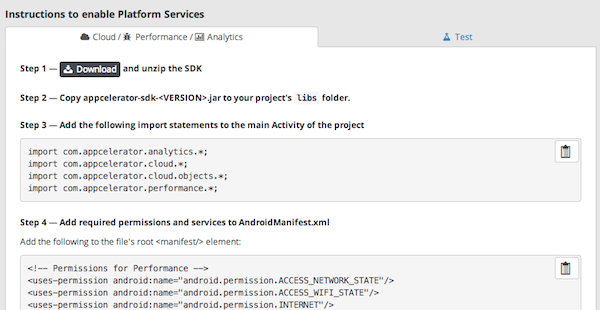

Managing Non-Titanium Client Applications in Dashboard
To use AMPLIFY(TM) Appcelerator Services in your Android and iOS applications built with Java or Objective-C, you need to first register an application to Appcelerator Dashboard. This defines the name, platform, and other metadata about the application. Once you've registered the application in Dashboard, you can download the libraries and frameworks to integrate AMPLIFY Appcelerator Services into your application. Dashboard also generates a new Mobile Backend Services datasource and the application keys required to enable the services in your app.
Register an Application in Dashboard
To register an Android Java, or iOS Objective-C or Swift application in Dashboard:
-
Log in to Appcelerator Dashboard.
-
Click the Add menu (+) and select Register App for Services to open the Register App for Services form.

-
In the Register App for Services form, enter an application Name, and select a Platform and Category. Optionally, you can provide a custom icon to display in Dashboard for your application, and a description. To add application team members from the organization, click the add (+) button in the Members form at right.
-
Click OK.
Dashboard displays the Platform Services tab for your application. Follow the directions to enable Platform Services.
Enable Platform Services
After you have created your client application, Dashboard directs you to the Platform Services tab for the application. When the client application is first created, the Cloud, Performance and Analytics services are automatically enabled, and the Test service is disabled. Follow the directions in the tab to integrate Platform Services in to your application.
-
To integrate the Cloud, Performance and Analytics services with your application:
-
Click on the Cloud / Performance Analytics tab if it is not already selected.
-
Click the Download button to download the APS SDK, unpack it and add the library to your project.
-
Copy the code snippets to your application as instructed to enable the services. Note before copying and pasting the last code snippet, use the Environment drop-down list to select the environment you want to deploy your application to.
-
-
To enable the Test service:
-
Click the Test tab.
-
Click the Download button to download the Appcelerator Test utility and unpack it.
-
Copy and paste the command to your terminal, and modify it for your project.
-
Build your project to enable the Test service.
-
For more detailed instructions, see the Quick Start Guide for Android APS SDK and Quick Start Guide for iOS APS SDK guides.

If you need to later return to these Enable Platform Services instructions, do the following:
-
Click the Apps menu and select the application. Dashboard displays the Overview tab of the application.
-
Click the Services button.
-
Click Add Platform Services to your app to display the Platform Services tab for the application.
View Application Information
The Overview tab for Android and iOS applications differs slightly from Titanium applications. The Overview tab contains two buttons at the top of the Overview page: App Info and Services.
The App Info section provides the same basic information, such as the application creator, version number, etc., as a Titanium application. The Services section contains:
-
Details on which Platform Services are enabled for the project
-
Application keys to enable Platform Services for your application
-
Link to instructions for enabling Platform Services

To retrieve the application keys:
-
Click the Apps menu and select the application. Dashboard displays the Overview tab of the application.
-
Click the Services button.
-
Click Show Key to display the application key for the services. For Cloud, Performance and Analytics, make sure the correct deployment environment is selected from the Environment drop-down list before copying the key.
Use the keys to enable AMPLIFY Appcelerator Services for your project.
For directions on how to enable Platform Services, click the Add Platform Services to your app link at the bottom of the Services section.